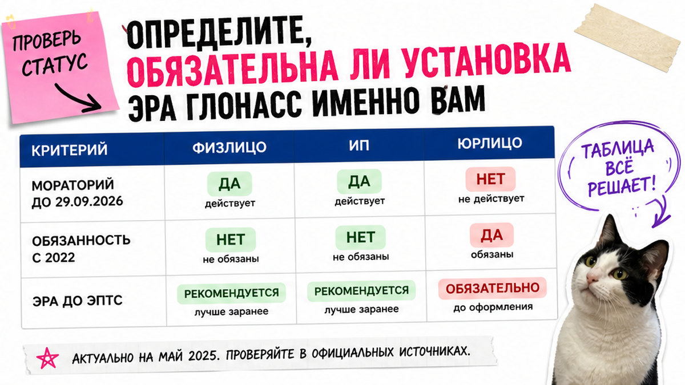
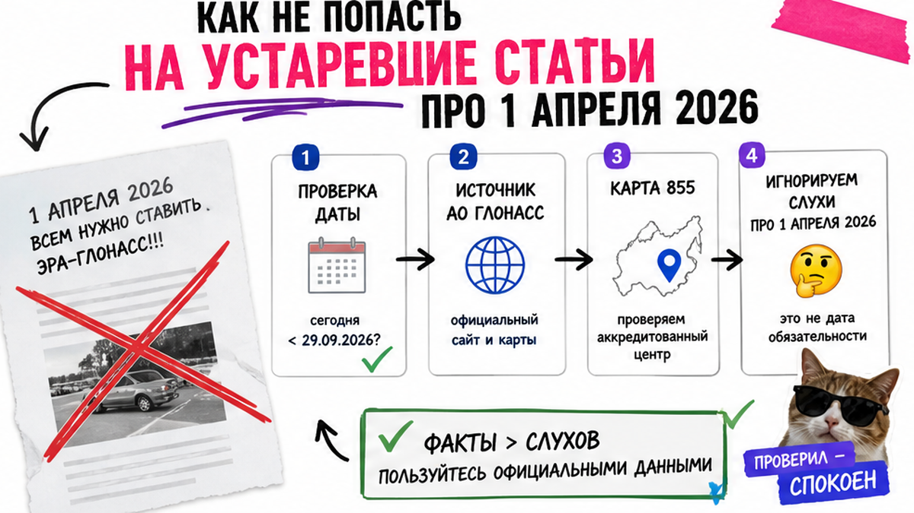
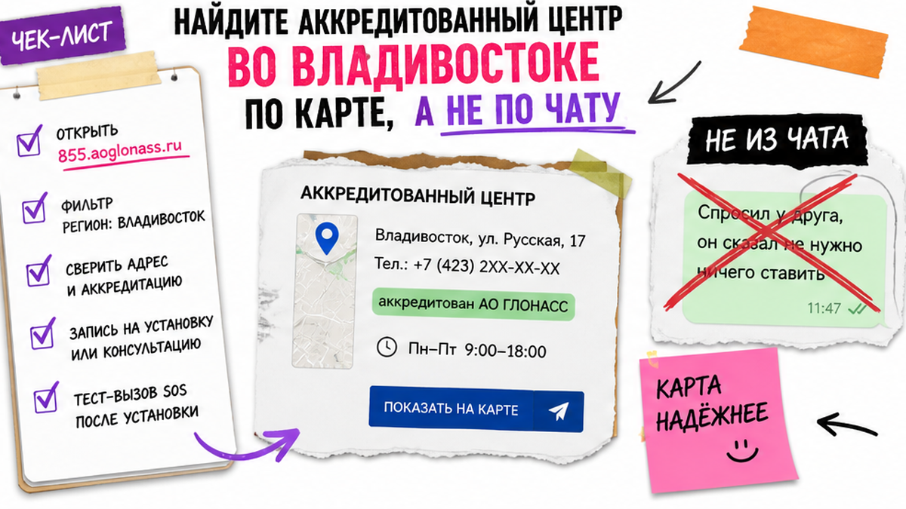

Сергей из Новосибирска уже почти отдал 18 тысяч "знакомому электрику" за кнопку ЭРА-ГЛОНАСС на правый руль через Владивосток: в чатах кричали, что с апреля 2026 без неё не растаможите. Потом выяснилось: он физлицо, мораторий ещё действует, а гаражный монтаж без активации не пройдёт в СБКТС. Ниже – спокойный чек-лист: нужна ли установка сегодня, куда ехать и какие бумаги забирать до ЭПТС.
TL;DR / Быстрый инсайт: Сначала проверьте статус ввоза: физлицо для личного пользования или ИП/юрлицо. Для физлиц на 29.09.2026 снятие моратория с 01.04.2026 официально отложено; юрлица и ИП обязаны ставить УВЭОС с 01.10.2022. Центр берите только с карты партнёров АО "ГЛОНАСС". После монтажа требуйте акт, паспорт устройства и успешный тест-вызов – иначе СБКТС и ЭПТС не соберутся.
УВЭОС на пальцах – это "кнопка SOS", которая связывается с государственной системой ЭРА-ГЛОНАСС и вызывает экстренные службы. СБКТС – заключение лаборатории о безопасности конструкции. ЭПТС – электронный паспорт транспортного средства. Без живой, идентифицированной кнопки (когда она обязательна) дальше по цепочке документов вы упрётесь в отказ.
Мы в Авто-Сейлс во Владивостоке видим одну ловушку: человек платит "из страха SEO", хотя установка сегодня не нужна, либо ставит блок без аккредитации. Сделайте иначе – по шагам ниже.

Типичная ошибка – считать, что "с 1 апреля 2026 всем обязательно". На практике развилка простая.
| Кто ввозит | Нужна ли УВЭОС сейчас | На что опираться |
|---|---|---|
| Физлицо, личное пользование | Пока действует мораторий / исключение; срочно "всем" не требуется | Комментарий Минпромторга о переносе даты 01.04.2026; портал ПП № 855 |
| ИП или юрлицо | Да, с 01.10.2022 | Официальная схема на 855.aoglonass.ru |
| Покупаете авто "уже с ЭРА" | Проверьте факт кнопки и записи в документах | Сверка салона + СБКТС/ЭПТС; риск фиктивной установки |
Делать: запишите на лист статус (физлицо / ИП / юрлицо) до любой оплаты. Не делать: оплачивать установку только потому, что в выдаче написано "обязательна установка эра глонасс с апреля".

Вот неожиданный факт на дату 29.09.2026: половина материалов в поиске всё ещё орёт "обязательно с 1 апреля", хотя Минпромторг прямо сказал, что оснащение физлиц с этой даты не планируется и переносится. Утверждённого постановления об отмене моратория в открытых источниках нет. Путаница выгодна тем, кто продаёт кнопку "срочно всем".
Перед записью перепроверьте портал 855.aoglonass.ru и свежую позицию ведомств. Локальные страницы могут упоминать исключение до конца 2027 – держите формулу: "пока действует мораторий; статус смотрю перед оплатой".
Рекомендация: физлицу при крике "без ЭРА не растаможите" – сверить статус. ИП и юрлицу – не откладывать: обязанность уже в силе.

Установка эра глонасс на авто делается только в сертифицированной мастерской из перечня АО "ГЛОНАСС". Самостоятельный монтаж и "электрик без очереди" – путь к отказу в активации и свидетельстве об оснащении.
На практике во Владивостоке ориентир – порядка десятка аккредитованных площадок по краю, а не любой гараж у СВХ. Делать: адрес из официальной карты. Не делать: ехать "к знакомому" из Telegram без проверки в реестре партнёров.
Боль "соберу не те бумаги и потеряю неделю" снимается заранее. Положите в папку:
Делать: соберите "до" и "после" списки до визита. Не делать: уезжать из центра только с чеком об оплате без акта и паспорта устройства.
Европейский eCall и любой "похожий" трекер российскую ЭРА-ГЛОНАСС не заменяют. Нужна российская УВЭОС с идентификацией в ГАИС. В счёте должны быть оборудование, монтаж и активация/идентификация.
Ориентиры на 2026 (не прайс Авто-Сейлс): во Владивостоке часто 28–55 тыс. ₽; терминал около 35 000 ₽; по регионам 40–70 тыс. ₽. Сравнивайте состав услуги, не одну цифру в чате.
Схема до ЭПТС:
Статус ввоза → Центр с карты 855 → Договор (УВЭОС + монтаж + активация) → Тест-вызов → Документы оснащения → СБКТС → ЭПТС → Учёт в ГИБДД
Рекомендация: откажитесь от предложений "поставим без тест-вызова" и "потом сами активируете". Без идентификации в системе кнопка для документов почти бесполезна.
Фиктивная установка – живой страх: в бумагах ЭРА есть, в салоне кнопки нет, в ГИБДД отказывают. После работ потребуйте:
Если покупаете уже ввезённый авто "с ЭРА" во Владивостоке – откройте салон и сверьте запись в СБКТС/ЭПТС. "Засвеченная" чужая кнопка из чужого комплекта документов вас не спасёт.
Делать: критерий готовности – устройство видно, документы на руках, тест-вызов прошёл. Не делать: верить одной строке в объявлении без проверки факта.
Когда установка эра глонасс для растаможки нужна, порядок такой: активированная УВЭОС → лаборатория на СБКТС → ЭПТС → ГИБДД. Не ездите на учёт с "пустым" ЭПТС и обещанием "кнопку потом".
Критерий успеха сегодня: отмечен статус, выбран центр с карты 855, собрана папка документов, понятно, какие бумаги требовать после монтажа. Это защита от страха "застряну без ЭПТС".
Подбор авто из Японии, Кореи и Китая и актуальные расчёты – в каталоге avto-sales125.ru. Уточнить статус заказа и документы по конкретной машине можно в Telegram @avtosales125. Форм на этой странице нет.
Дальше по машине из Азии смотрите лоты в каталоге Авто-Сейлс – там же уточняют логистику через Владивосток без форм на блоге.
Материал проверен: Редакция Авто-Сейлс – эксперты по авто под заказ из Японии, Кореи и Китая (Владивосток).
Достоверность: сверка на 29.09.2026 с порталом АО "ГЛОНАСС" (855.aoglonass.ru), комментарием пресс-службы Минпромторга о переносе оснащения физлиц, локальными инструкциями Владивостока по УВЭОС и практикой сопровождения ввоза; актуальный подбор и расчёты – в каталоге.
Сначала отметьте, что вы физлицо для личного пользования. На 29.09.2026 снятие моратория с 01.04.2026 официально отложено; не оплачивайте установку только из страха заголовков. Перед записью в центр ещё раз откройте 855.aoglonass.ru и свежую позицию ведомств.
Сверьте счёт по составу: оборудование + монтаж + активация. Ориентиры из открытых источников 2026 – примерно 28–55 тыс. ₽ локально и 40–70 тыс. ₽ по регионам; точную сумму уточняйте у аккредитованного центра из карты партнёров.
Откройте карту партнёров на 855.aoglonass.ru, выберите мастерскую во Владивостоке или Приморье из списка и запишитесь только туда. Адрес "из чата" без проверки в реестре не используйте.
Не уезжайте без паспорта УВЭОС, акта установки, подтверждения оснащения/идентификации и отметки об успешном тест-вызове. Этот комплект сразу кладите в папку для СБКТС.
Нет. Нужна российская УВЭОС с идентификацией в ГАИС ЭРА-ГЛОНАСС. Если предлагают "похожий блок без документов" – откажитесь и ищите партнёра с карты 855.
Не берите машину "на слово". Проверьте салон, сверьте СБКТС/ЭПТС и потребуйте документы на устройство. При несоответствии – либо восстановление через аккредитованный центр, либо отказ от сделки.